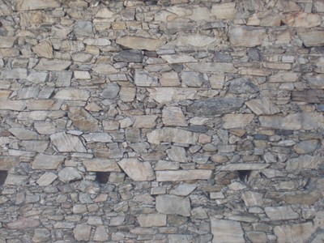
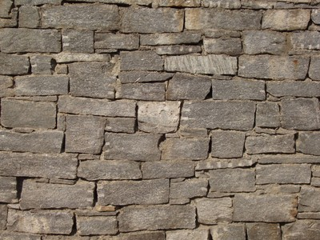

Stone, other type [SPO]
The type of stone is known, but its type is not listed in the table. For example, metamorphic rocks, e.g. gneiss, marble, quartzite, etc. Gneiss is a common type of metamorphic rock used for wall construction in Europe (e.g. Southern Switzerland, Italy, etc.).

Gneiss stone wall residential construction, Ticino, Southern Switzerland (T. Schacher)

Gneiss stone walls, a 12th century church, Ticino, Southern Switzerland (T. Schacher)

Heterogeneous (mixed) masonry wall uses a combination of limestone and limestone, as well as clay bricks for arching lintels, L'Aquila, Italy (A. Benedetti)